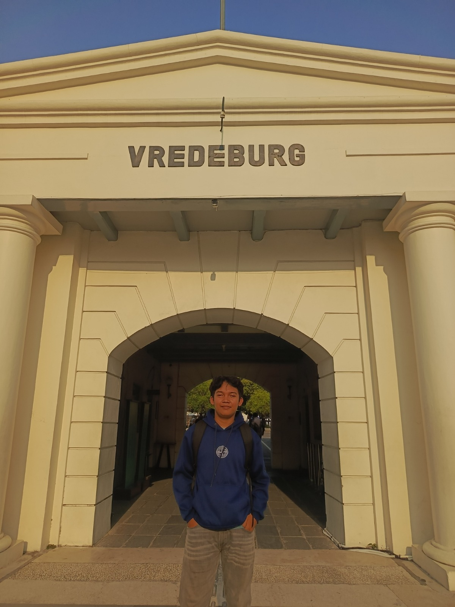
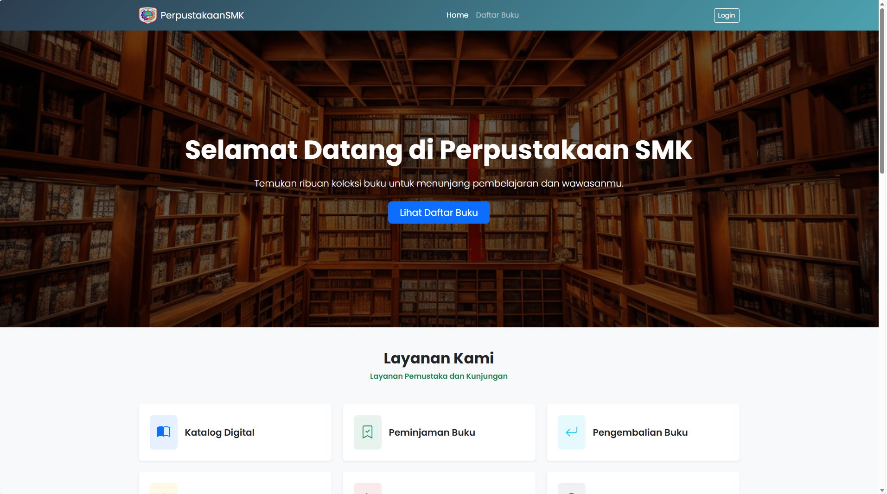

Tentang Saya
IT Programmer & FullStack
Saya tertarik pada pengembangan aplikasi dan website. Saya menikmati proses mengubah ide menjadi solusi digital yang fungsional dan mudah digunakan.
Halo Semua, senang bertemu denganmu 👋
IT Programmer Frontend Developer
Mahasiswa Teknik Informatika
Saya senang membangun pengalaman digital yang bermanfaat melalui teknologi dan desain web. Selamat datang di portofolio saya.
Tentang Saya
Tentang Saya
Saya tertarik pada pengembangan aplikasi dan website. Saya menikmati proses mengubah ide menjadi solusi digital yang fungsional dan mudah digunakan.
Fokus Saya
Saya terus mengembangkan kemampuan dalam pemrograman, Fullstack, dan desain antarmuka melalui proses belajar dan proyek-proyek.
Pengalaman
Saya pernah mengikuti program Praktik Kerja Lapangan di BBPPMPIV-BMTI, di mana saya mendapatkan pengalaman berharga dalam pengembangan aplikasi dan kolaborasi tim, saya juga di tempatkan di bagian rekayasa perangkat lunak, yang mengerjakan beberapa project web sederhana.
Pendidikan
Saya saat ini sedang menempuh pendidikan di Universitas Islam Negeri Sunan Kalijaga, jurusan Teknik Informatika. Saya berkomitmen untuk terus belajar dan mengembangkan keterampilan saya dalam bidang teknologi informasi.
Project

Proses Pengerjaan

Kontak
Jika Anda tertarik untuk bekerja sama atau memiliki pertanyaan, jangan ragu untuk menghubungi saya. Saya akan dengan senang hati merespons secepat mungkin.
Kirim Email